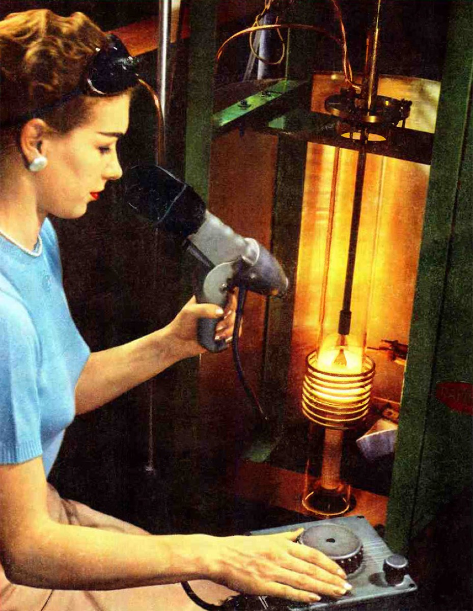
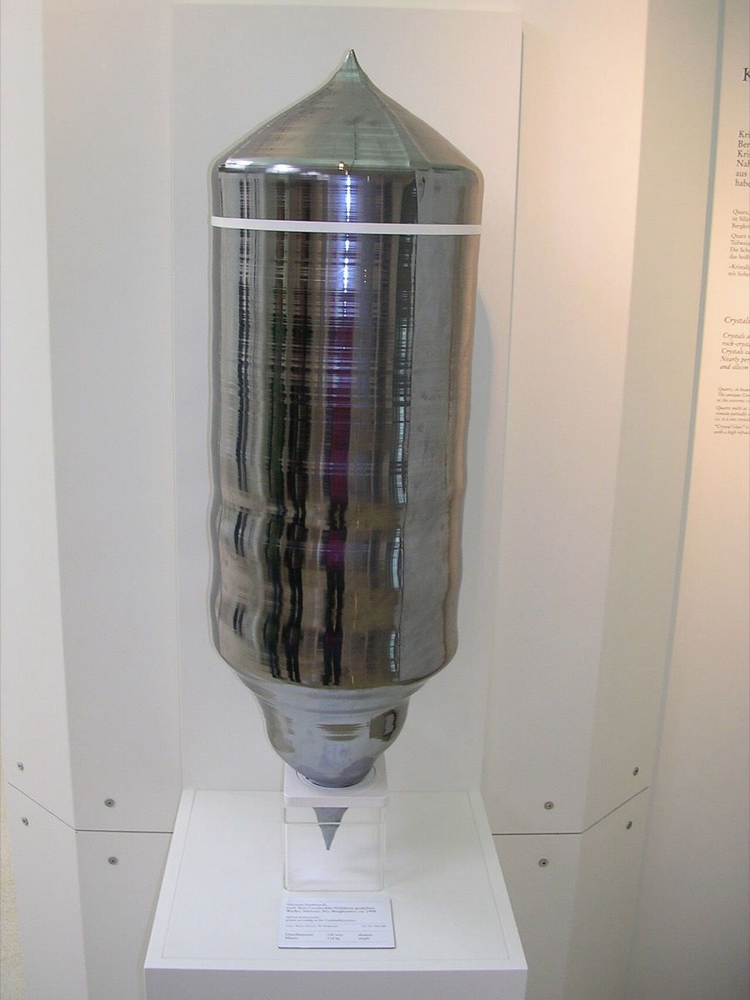
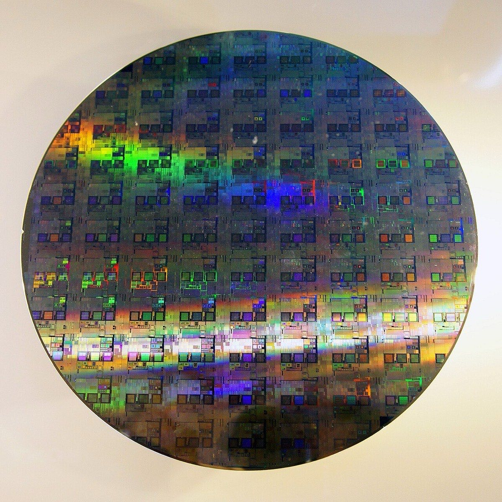
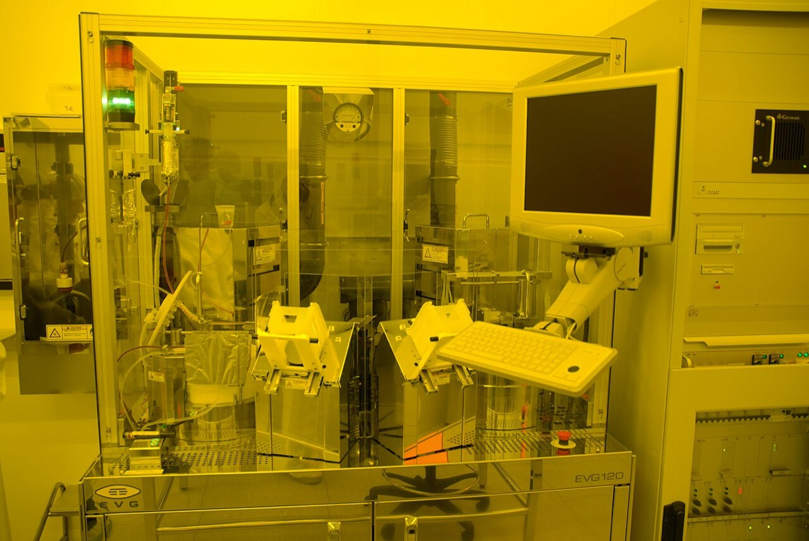
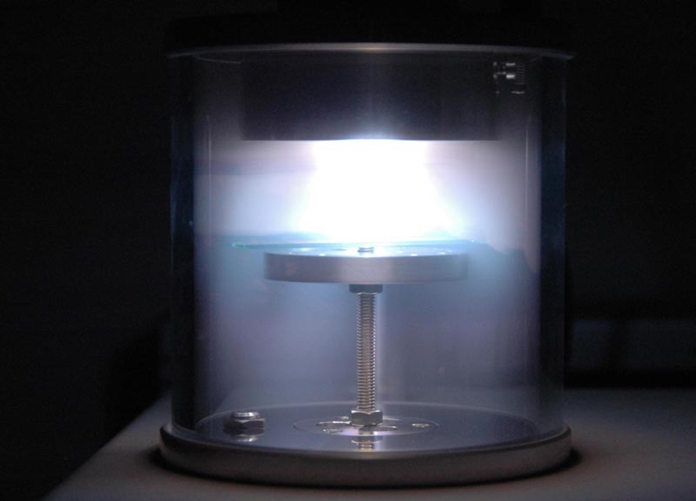
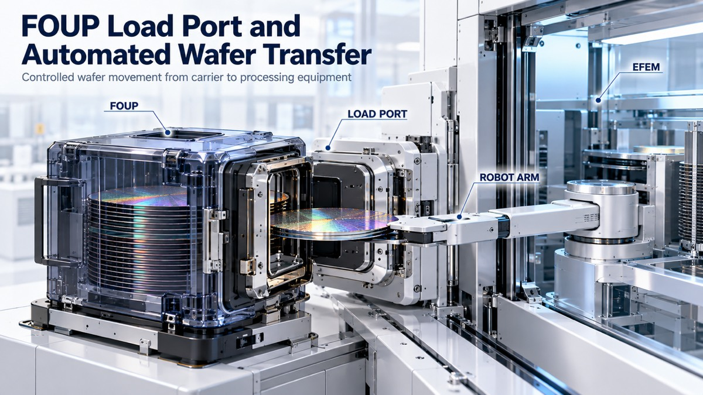
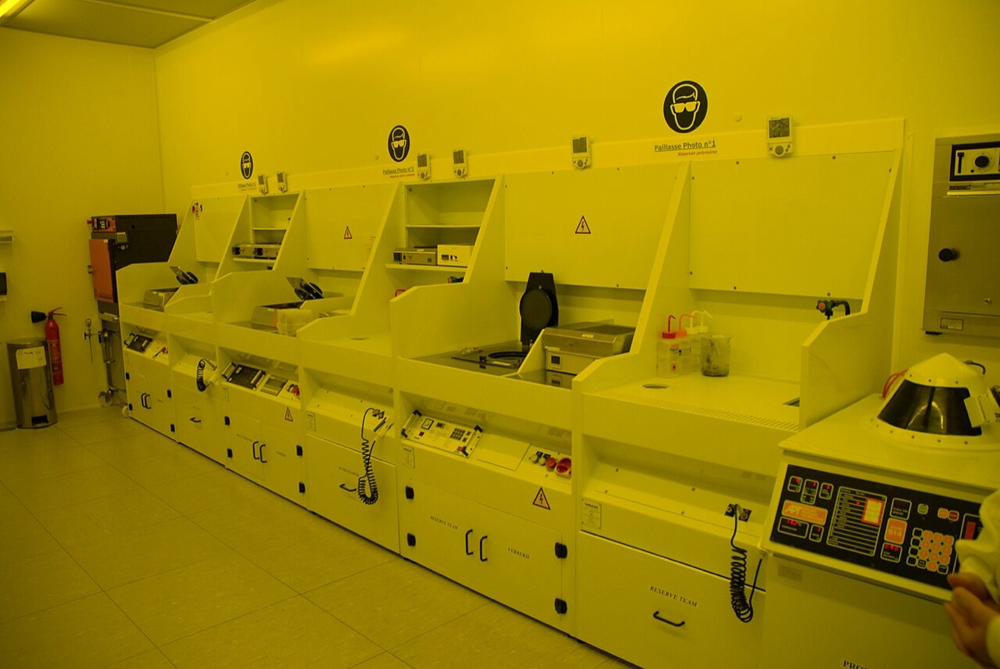
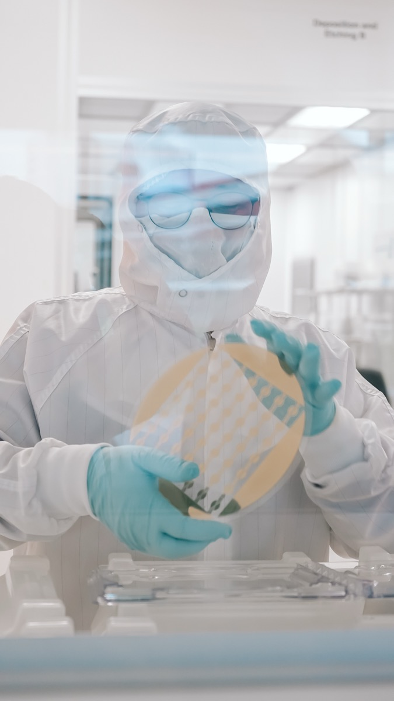

半導体の競争力は設計でも露光でもない。設計・前工程・後工程・電力用途という各層のうち、その時点で需要を満たせない層に決まる。2026年は先端パッケージである。
半導体の話題は一点に集まりやすい。線幅が何ナノメートルか、露光装置を何台確保したか、という問いである。しかし2026年7月16日の決算説明会で、TSMCのC.C. Wei氏は自社のパッケージ能力が逼迫しており顧客の成長を制限していると述べた。制約はウェハを焼く工程ではなく、焼いたあとにチップを積んで基板へ載せる工程にあった。
この事実は、半導体産業を1本の鎖として見ないと理解できない。鎖は最も弱い環で切れる。どの環が最も弱いかは技術の優劣ではなく、需要が増えたときに最初に追いつかなくなる環で決まる。露光装置を1台増やす場合と、組立工場を1棟建てる場合と、電力用の別ラインを立ち上げる場合とでは年限が違う。投じる資本の性質も違う。
この章は、設計から出荷までの層を並べ直したうえで、各層の増設リードタイムを比べる。読み終えたときに残ってほしいのは、どの企業が偉いかという序列ではなく、どの層が今この瞬間の律速かを自分で判定する手順である。律速は移動する。2026年と2027年では答えが変わる。
半導体の用語は、抽象度の違う4つの層の言葉が混在したまま流通している。EDAは設計工程を進めるソフトウェアである。FinFETとGAAはトランジスタの立体構造である。リソグラフィは露光装置の物理である。RISC-Vとx86は命令セットアーキテクチャである。NANDは記憶素子の製品カテゴリである。これらを同じ平面に並べると、FinFETとRISC-Vを競合する技術選択肢として比較する、といった誤りが起きる。
順序に直すと次のようになる。第1に命令セットを決める。第2にEDAで論理設計と物理設計を行う。第3にリソグラフィで露光する。第4にFinFETまたはGAAという構造としてトランジスタを作り込む。第5にロジックまたはメモリとして製品化する。第6にチップを積層し基板へ実装する。第7に完成品として電力系や車載系や計算機系へ組み込まれる。
本書はこの流れを4つの層に束ねる。第1は前段の設計層である。第2はウェハを加工する前工程層である。第3はチップを組み立てて検査する後工程層である。第4は電力を扱うパワー半導体という別系統の用途層である。パワー半導体を別立てにするのは、競争軸が線幅ではなく耐圧とオン抵抗と熱設計だからである。ロジックとメモリの論理をそのまま持ち込むと読み違える。
層を分けたうえで問うべきことは1つである。需要が1単位増えたとき、どの層が最初に追いつかなくなるか。これが律速の定義である。
EDAが自動化したのは、設計仕様から製造用マスクデータへの変換作業である。トランジスタ1個の物理設計ではない。工程は次の順に並ぶ。HDLによる設計入力、論理合成、配置配線である。続けてテスト容易化設計と検証がある。DRCとLVSとサインオフである。論理合成はVerilogやVHDLの高位記述をゲートレベルのネットリストへ変換する工程である。配置配線は素子の座標と金属配線の経路を決める工程で、かつて人手のレイアウト作業だった部分にあたる。DRCとLVSは、製造ルールへの適合とレイアウト対回路図の一致を、目視から自動チェックへ移した工程である。Synopsysは、現代のチップが数十億個のトランジスタを含み手作業の設計は不可能だと説明している 出典。
ここでよくある理解を1つ潰しておく。EDAはトランジスタを自動設計してくれる、という理解は正しくない。トランジスタの構造自体はプロセス側が標準セルライブラリとして提供する。設計者はセルを選ぶのであって、セルを描いてはいない。EDAが置き換えたのは描く作業であり、何を作るか決める作業は人間に残った。設計者の仕事はマイクロアーキテクチャの選択、電力と面積と性能のトレードオフ判断、IPの組み合わせ設計へ移っている。
この層の経済規模は、前工程や後工程に比べて小さい。Synopsysの2025会計年度売上は70.54億ドルで、うちDesign Automationセグメントが53.02億ドル、全社の75.2%を占めた 出典。後述するTSMCの2026年設備投資600億ドルから640億ドルと比べると、EDA最大手の年間売上は1桁小さい。設計層は資本ではなく人材と検証時間で律速される層だと押さえてよい。
命令セットの層も同じ性質を持つ。RISC-Vの武器は3つある。第1にライセンス構造で、ISAと批准済み拡張はロイヤリティ無償かつ恒久的に公開される。RISC-V InternationalはISA自体が新規技術を表すものではないとして特許を出願していない 出典。第2にモジュール性で、基本命令セットRV32Iは40命令にとどまり、乗除算やベクトルは拡張として後付けする 出典。第3に統制構造で、2020年3月にスイスで法人化され、特定国の輸出管理に単一のライセンサーとして服さない形をとった 出典。
対するArmはライセンス料とチップ単位のロイヤリティで収益を得る。2026年3月期の売上は49.20億ドルで、2023年3月期の26.79億ドルに対し1.8倍である 出典。内訳を見ると次の通りである。同期のロイヤリティ収入は26.1億ドル、ライセンス収入は23.1億ドルで約半分ずつである 出典。四半期のロイヤリティは第2四半期6.20億ドル、第3四半期7.37億ドル、第4四半期6.71億ドルと推移した。前年同期比では21%から27%の増加である。累計のチップ出荷個数は3,500億個を超える。
この2本立てが意味するのは、収益の半分が過去の設計の出荷数に連動し、残り半分が将来の設計の契約数に連動するという構造である。ロイヤリティは出荷が続くかぎり入り続けるが単価が小さく、ライセンスは大きいが一度きりである。同社が伸ばしているのはデータセンター向けで、この領域のロイヤリティは前年比で2倍を超えた。スマートフォンで積み上げた出荷個数の資産を、単価の高い領域へ持ち込めるかがこの事業モデルの分岐点になる。
RISC-Vがこの収益構造をどこまで削れるかについては注意がいる。無償なのはISAの仕様だけである。コア実装、検証、ソフトウェア移植のコストは残る。RISC-Vが実際に奪えているのは、ISAライセンス料と設計自由度が効果を持つ組込みや制御用の小型コア領域である。x86の既存バイナリ互換という資産を代替してはいない。
前段の分業は、供給を縛る側ではなく、誰が付加価値を取るかを決める側にある。この区別が次節につながる。
まず物理から入る。平面MOSFETはゲートがチャネルの上面1方向からしか電界をかけられない。チャネル長が短くなるとソースとドレインの電界がチャネルに直接及び、ゲート電位でチャネルを閉じきれなくなる。これが短チャネル効果であり、実害はオフ状態のリーク電流として現れる。FinFETはチャネルをフィン状に立て、ゲートがフィンの両側面と上面を包む構造にした。同じチャネル長でもゲートがチャネルを囲む面積が増えるため、静電的な制御力が回復する 出典。
因果の向きに注意がいる。微細化のために立体化した、という理解は逆である。微細化を続けた結果ゲート制御が効かなくなり、制御力を取り戻す手段として立体化した。面積縮小は副次的な結果である。
時期は量産実績で確定できる。Intelは2011年に22nm世代で3-Dトライゲートを量産導入した。22nm世代のゲート長は約25nm、トランジスタ密度は1平方ミリメートルあたり1,650万個である 出典。ファウンドリではTSMCが16nm FinFETで追随した。N7は2018年である。N5は2020年、N3は2022年である。いずれもFinFETで量産した。N2では第1世代ナノシートすなわちGAAを採用し、2025年第4四半期に量産を開始している 出典。露光側ではEUVの波長が13.5nm、分解能が13nm、開口数はNXEで0.33である。High-NAのEXEは開口数0.55、分解能8nmとされる 出典。なおIntelの22nm世代の性能数値は一次資料であるプレスリリースがHTTP 403で取得できず、二次資料に依拠している。
では、前工程の技術が止まったのか。止まっていない。止まっていないが、性能を上げる手段の主戦場が移った。1個のダイを小さくするだけでは、AIアクセラレータが必要とする演算量とメモリ帯域に届かない。演算ダイ、シリコンインターポーザ、HBMスタックを1つの基板上に統合して初めて製品になる。この統合工程が2.5D先端パッケージであり、代表がTSMCのCoWoSである。ここが足りなければ、前工程のウェハをいくら積んでも出荷はできない。
需要側の構成も同じ方向を指している。TSMCの2026年第2四半期のプラットフォーム別売上構成比は、HPCが66%、スマートフォンが22%である。スマートフォンは2025年第2四半期の27%から5ポイント下がった 出典。7nm以下の先端プロセスは同四半期のウェハ売上の77%を占め、2nmは3%だった 出典。市場全体でもWSTSの2026年春季予測がある。2026年の世界半導体市場を1兆5,100億ドル、前年比90%増とする。うちメモリを前年比約250%増の8,000億ドル超と見込む 出典。
ここで1つ、よく引かれる数字に注意を促しておく。半導体売上の約25%がスマートフォンという構成比は、2026年時点では成立していないと判断する。TSMCのプラットフォーム別構成でスマートフォンは22%まで下がり、市場全体はメモリが約53%を占める計算になるためである。ただしこれは断定できない。WSTSもSIAもアプリケーション別の売上構成比を一般公開しておらず、SIA FactbookのPDFはHTTP 403で本文を取得できなかった。したがってこの判定はファウンドリ1社の構成比と市場全体のカテゴリ別構成からの推論であり、一次資料で直接示された数値ではない。
2026年時点ではパッケージが先に効いている。根拠は当事者の発言である。TSMCのC.C. Wei氏は2026年7月16日の決算説明会で、自社のパッケージ能力が逼迫しており顧客の成長を制限していると述べ、IntelのEMIB-Tのような代替手段が市場に増えることを歓迎すると発言した。同氏はテスタも不足していると述べており、制約はパッケージ単独ではなく後工程バケット全体に及んでいる 出典。
能力の絶対量を押さえる。TrendForceは2026年6月時点の数値を示す。2026年のCoWoS月産能力はTSMC自社分120,000枚から140,000枚、OSATパートナー分50,000枚から60,000枚、業界合計を約200,000枚と伝えている。OSAT分は合計の25%から30%にあたる 出典。
ここで数字が食い違う。同じTrendForceの2026年4月の記事は、CoWoSの2026年能力を年130万枚、2027年に200万枚としている 出典。月産200,000枚を単純に年換算すると240万枚となり、130万枚と一致しない。本章は月産の系列を採る。理由は次の2点である。月産の系列のほうが2カ月後の更新である。かつTSMC分とOSAT分を分解して示しているため、どの範囲を数えているかが読者に検証可能だからである。年130万枚の系列はTSMC自社分のみを指しているか、または年初時点の平均能力を指している可能性があるが、記事本文からは範囲を確定できない。年換算値を使う場合は130万枚から240万枚の幅として扱うのが安全である。
範囲の定義が揺れても、増設の速度そのものは一貫している。TSMC自社分の月産能力は2024年末の約35,000枚から2025年末の約75,000枚へ、2026年末には125,000枚から130,000枚へ増える見通しで、年率でおよそ80%の拡張が続いている。予約の集中度も高い。NVIDIA1社が2026年分として800,000枚から850,000枚を確保し、その年の総能力の50%超にあたると報じられている。増設が年80%で進んでも需給ギャップが残るのは、需要側の伸びがそれを上回っているためである。
分業線はCoWoSという1つの工程名の内部に引かれている。CoWoSは2段階に分かれる。CoWはチップをインターポーザへ接合する段階である。WoSはインターポーザを基板へ接合する段階である。TSMCはWoSを以前からASE、Amkor、SPILへ外注してきた。一方、CoWの外注は限定的にとどめてきた。2026年8月、TSMCがCoWの外注を拡大するとの報道が出た 出典。受け手のOSATはいずれもWoSの技術ライセンスを既に受けており、CoW向けの新ラインに向けて装置発注を進めていると報じられている 出典。これはいずれも報道段階の情報であり、当事者の開示ではない。
線が引かれる原理は工程の性質にある。CoW側はウェハプロセスの延長で、シリコンインターポーザ形成やハイブリッドボンディングを含み、前工程の装置と歩留まり管理に近い。WoS側は有機基板の扱いとリフローと反り制御が中心で、従来のフリップチップBGAの延長にある。したがって線は技術ライセンスと歩留まり責任の所在で引かれており、固定的な工程境界ではない。
第二極はIntelである。ニューメキシコ州リオランチョのFab 9を米国内の先端パッケージ拠点とし、従業員2,700名を置く。レチクル換算の実装面積は現行8倍、2028年に12倍超を計画する 出典。TSMCは2028年に14倍レチクルのCoWoSを掲げており、面積で競争が起きている。
第三極がOSATである。2024年のOSAT上位10社合計売上は415.6億米ドルで前年比3%増である。内訳の上位はASE 185.4億米ドルとAmkor 63.2億米ドルである。続けてJCET 50.0億米ドル、通富微電 33.2億米ドル、Powertech 22.8億米ドルだった 出典。ASEは上位10社合計の約45%を占める。この415.6億米ドルは後工程全体ではなく上位10社の合計である点に注意がいる。物理的な拠点数では、SEMIとTechSearch Internationalの2026年版データベースが世界820施設超を収録し、前年版の750施設から増えた。うち170施設超がAIとHPCを主要用途として申告している 出典。
では律速はいつまでパッケージにとどまるか。CoWoSの需給ギャップは2026年央の約20%から2026年末に約10%へ縮む見通しで、2.5D能力の逼迫は2027年に緩み始めるとされる 出典。一方でメモリ側は逆に動く。2027年のHBMビット出荷は前年比50%増から60%増と見込まれるが需要増に追いつかず、DRAM全体の逼迫がHBM向けウェハ配分を縛る。その結果、NVIDIAはRubin Ultraについて当初の12段HBM4eから8段HBM4eや12段HBM4への引き下げを検討していると報じられている 出典。2026年のHBM市場を546億米ドル、前年比58%増とする予測もある 出典。
順序をまとめる。2026年はパッケージが出荷台数を縛る。2027年以降はHBMとDRAMが仕様と台数の両方を縛る。メモリ制約が台数より先に仕様へ現れるのは、積層段数がGPU1台あたりのHBM容量とGPU出荷台数のトレードオフになるためである。律速が層をまたいで移動する例として、この2年間の推移は覚えておく価値がある。
パワー半導体は電流を切り替えて損失を減らす部品である。用途別の金額内訳も、専業大手のセグメント開示から輪郭は取れる。インフィニオンの2025年9月期の売上は146.62億ユーロで、セグメント利益25.60億ユーロ、利益率17.5% である。同期第3四半期の内訳は次の通りである。車載が18.70億ユーロである。パワー・センサーシステムズが10.53億ユーロ、グリーン産業パワーが4.31億ユーロ、コネクテッドセキュアシステムズが3.69億ユーロだった出典。伸びているのはパワー・センサーシステムズとグリーン産業パワーで、前者はAIサーバー向け電源が牽引している。車載が最大の区分である一方、成長の起点はデータセンター側に移りつつある。ただしこれは1社のセグメント区分であり、市場全体の用途別金額比ではない。
競争軸は線幅ではない。耐圧とオン抵抗である。熱設計と実装である。設備投資の単価も先端ロジックとは1桁以上違う。ロジックとメモリの論理をそのまま持ち込むと読み違える。
需要源は2つある。第1は車載で、主戦場は駆動用インバータである。400Vから800Vのバッテリー系に対応する耐圧600Vから1200Vの領域で、IGBTモジュールまたはSiC MOSFETモジュールが使われる。車載充電器とDC-DCコンバータも同じ電圧帯を使う。第2はAIデータセンターの電力供給網である。系統からラックまでの配電は高耐圧側で車載の耐圧帯と部分的に重なるが、ラック内の電源ユニットからGPU直下の電圧変換までは低電圧かつ大電流の領域で、低耐圧MOSFETとGaNデバイスの世界になる。
したがって、車載が減速したらデータセンターが穴埋めするという代替関係は成立しにくい。IGBTモジュールの生産ラインは、GPU直下の電圧変換用デバイスの生産ラインに転用できない。強い企業も別である。
市況の実勢を見る。WSTSの2026年春季予測では次の通りである。2026年の世界半導体市場が前年比90%増、メモリが約250%増、ロジックが37%増と予測される。これに対し、ディスクリートは8%増にとどまる。アナログは10%増である。地域別ではアメリカ大陸が112%増、日本が28%増である 出典。パワー半導体の大半はディスクリート区分に入る。AI投資は2026年の半導体市場を押し上げているが、その押し上げはメモリとロジックに集中しており、パワー半導体の伸びは1桁違う。データセンターがパワー半導体を牽引しているという主張は、この時点の数字では支持されない。
ただしディスクリートの成長率はパワー半導体の代理指標であって同一ではない。電源管理ICなどはアナログ区分に入り、逆にディスクリートには小信号トランジスタやダイオードも含まれる。
日本勢の位置づけについても、通説を数字で点検しておく。富士電機の半導体セグメントは次の通りである。2025年3月期に売上高2,368億円、営業利益371億円である。2026年3月期に売上高2,374億円、営業利益235億円だった。営業利益は136億円減、率にして37%減であり、営業利益率は15.7%から9.9%へ低下した。同じ2026年3月期の全社は売上高12,276億円、営業利益1,366億円である。半導体セグメントを除く営業利益は1,131億円となり、2025年3月期の805億円から40%増えている計算になる 出典、出典。営業利益率と半導体を除く営業利益は開示値ではなく、開示された売上高と営業利益からの算出である。全社が増益するなかで半導体だけが減益している。技術的な蓄積があることと、その期に稼げていることは別である。
パワー半導体に限定した工程別シェアの一次データは、本節の時点でも取得できていない。一般のロジック・メモリ工程における日本企業の装置・素材の位置とシェアは、後節「日本の装置・素材はどの工程で供給を決めているか」で扱う。パワー半導体の性能は線幅ではなくパッケージの熱設計で決まる部分が大きい。基板材料と接合材がある。封止材とモジュール構造の設計がそのまま製品性能になるという構造推論がある。モジュール用途別のシェア表が無い以上、依然として推論にとどまる。
結論から述べる。塗布現像では、資本財であってもTELの世界シェアはCY2023〜2025年で90〜92%と横ばいであり、「資本財は世代交代で下がる」という通説はこの工程では棄却される。ウェハーとレジストが世代を越えて残りやすいかは、認定残存期間の一次開示が無く判定不能である。九州への立地が世界シェアを押し上げるかも、現状の開示では判定できない。
読者と判断：「日本の半導体」を一括で評価せず、工程ごとに検証できる持続と売上の連動先（操業か設備投資か）を分けて読む。塗布現像は年次シェアで持続を確認できる。ウェハーとレジストの世代越え持続は判定不能である。九州の投資額は国内の建設・電力・人材の需要指標としては使える。工程別世界シェアの先行指標として使うには、品目別の世界シェア時系列が別途要る。
分解：物理的制約は露光の光源波長と投影光学系、素材の純度と結晶欠陥、装置の機構と制御である。お金の流れでは装置が設備投資時の一括発注、素材がウェハー投入に比例する消耗品である。利得の帰属では装置売上が投資サイクル、素材売上が操業に従う。法と強制力は2023年7月の製造装置23品目の輸出管理である。時間では、素材は認定に年単位を要するという慣行があるが残存期間の一次開示は無い。装置は世代ごとの機種選定だが、インライン統合で再選定が阻まれる場合がある。
同じ高シェアでも、検証できる持続は工程で異なる。塗布現像装置は1台あたり数億円規模の資本財であり、売上は設備投資のタイミングに従属する。ただし露光機とインラインで接続されるため、露光世代の切替時にも塗布現像だけを他社へ切り替える費用は大きい。ウェハーとレジストは顧客のプロセス認定に年単位を要する消耗品であり、売上は稼働率とウェハー投入枚数に連動する。ただし認定残存期間の一次開示が無いため、世代を越えた持続は仮説にとどまる。




塗布現像の世界シェア（Gartner出荷額ベース、TEL作成）は年次資料で次の通りである。CY2023は90% 出典、CY2024は92% 出典、CY2025は91% 出典である。経産省表の89%とは時点と集計が異なり disputed である 出典。EUV向け塗布現像は同社推計で100%、EXE世代工程についても公式製品説明で「約100%」と開示する（いずれも自社推計） 出典。TELは2021年にimec-ASMLのHigh-NA共同研究ラボへ塗布現像装置の導入を発表しており、次世代露光とのインライン接続を先行して確保した 出典。
「資本財は世代交代でシェアが低下する」という通説は、少なくとも塗布現像の自己開示の範囲では棄却される。下がらない理由として同社が示すのは消耗品性ではなく、露光機との接続と設置済み台数である。ただし顧客別の採用台数一次表は非開示であり、判定は限定的である。ウェハーとレジストの「世代を越えて残りやすい」という仮説は認定費用に依存する。信越化学とSUMCOの有価証券報告書に顧客別の認定残存期間の開示は無く、本節では判定不能とする。
経済産業省がOmdia等を基にまとめた工程別シェアと、各社IRを突き合わせる 出典。国単位のシェアは次の通りである。主要部素材6品目で日本48%、半導体製造装置で日本31%である（as_of: 2021年度。OMDIAを経済産業省が再集計） 出典、出典。
| 工程 | 主な担い手 | シェア | 切替費用の性格 | 時点・注記 |
|---|---|---|---|---|
| シリコンウェハー | 信越化学29%、SUMCO24%、GlobalWafers19% | 上位2社53% | 顧客認定（残存期間は非開示） | 経産省表。JOGMEC二次確認あり |
| フォトレジスト | 東京応化24%、JSR20%、信越化学18%ほか | 日本勢上位3社62% | 顧客認定（残存期間は非開示） | 経産省表 |
| レジスト塗布・現像 | 東京エレクトロン89〜91% | TEL首位 | 露光機とのインライン統合 | 経産省89%／TEL 91%。disputed |
| EUV用塗布現像 | 東京エレクトロン100% | 同左 | 同上（High-NAでも約100%） | TEL自己開示 |
| ドライエッチング | Lam37%、TEL26%、AMAT25% | 米2社＋TEL | 世代ごとの機種選定 | 経産省表 |
| 露光装置 | ASML94%、Canon4%、Nikon2% | オランダ寡占 | 投影光学系の単一系列 | 経産省表 |
| ダイシングソー | ディスコ79%、東京精密19% | 日本勢98% | 後工程の装置選定 | 経産省表 |
| プロセスコントロール | KLA56.5% | 次点の6.5倍 | 歩留まり計測の設置済み基盤 | KLA Investor Day 2026。single-source |

マクニカは装置でも部素材でもない。工程上の位置は完成チップの高付加価値ディストリビューションである。2026年3月期の連結売上は1兆2,142億円、うち半導体事業は説明会区分で1兆286億円である（短信セグメントの集積回路等は1兆400億円） 出典。
東京エレクトロンの国内製造は製品カテゴリごとに法人が分かれる。宮城はプラズマエッチングを担う。山梨は熱処理成膜と枚葉成膜などを担う。熊本（合志市）はコータ／デベロッパ、洗浄、3次元実装を担う 出典。合志市は菊陽町のJASMと隣接するが別市である（菊陽の都市プロファイル）。
九州経済調査協会の2024年12月更新（原表PDFは今回取得できず）を、複数の二次資料で照合する。2021〜2030年の九州・沖縄・山口の半導体関連設備投資（1億円超、201件）は総額6兆1,820億円である。経済波及効果は23兆300億円である。熊本は13兆3,890億円である 出典、出典、出典。前年公表の同協会PDFは投資約6.0兆円・波及20兆770億円である 出典。九州経済産業局「九州経済の現状2024」では、2024年の九州IC生産金額は1兆3,126億円、全国比48.5%である 出典。


特定半導体生産施設整備等計画の認定条件では、JASMに対しウェハーを主に日本の供給者から調達すること、間接材の50%以上をローカル・サプライチェーンから購入することが求められた。間接材には薬品・研磨剤・特殊ガスや構内サービスが含まれ、半導体製造装置は含まれない 出典。JASMは第1工場の間接材国内調達比率を2024年に45%とし、2026年に50%、2030年に60%へ引き上げる目標を示した 出典。これは世界シェアの目標ではなく、国内計上比率の目標である。
素材企業の売上構成も、立地が世界シェアを動かさない読みと整合する。東京応化の2025年12月期は日本366.4億円に対し台湾856.0億円である 出典。信越化学の2026年3月期の海外売上高比率は78.6%である 出典。九州の投資は国内の建設・電力・人材と、間接材の国内売上を増やす。工程別世界シェアを押し上げたかは、投資前後の世界シェア比較表が無いため判定できない。

塗布現像では、年次シェアの横ばいが確認できる範囲で東京エレクトロンが既存供給者として売上を残しやすい。露光とプロセスコントロールではASMLとKLAが該当する。ウェハーとレジストでは信越化学・SUMCO・東京応化・JSRが高シェアを持つ。世代交代後の残存は認定残存期間の開示が無く判定不能である。九州の立地政策で直接増えるのは、建設と電力と人材、および間接材の国内供給者の売上である。装置メーカーの世界シェアは、認定供給者一覧に既に載っているかどうかに依存する。
2023年7月23日施行の省令改正で、半導体製造装置23品目が輸出管理の対象に加わった。出荷先の制約は装置メーカーの売上の地理構成を変えうるが、工程別の世界シェア表そのものを日本側へ移す仕組みではない 出典。
並べると、読者の判断軸は次の2点にまとまる。第1に、塗布現像のように年次シェアで持続を確認できる工程と、ウェハー・レジストのように残存が判定不能な工程を分ける。第2に、九州の投資額を国内需要の指標として使う。世界シェアの先行指標とするには工程別シェアの時系列が別途要る。
律速の判定は、増設リードタイムの長さそのものではない。現に需要を満たせない層がどれかである。増設リードタイムは層ごとの制約の性質を示す補助指標として並べる。
| 層 | 増設リードタイムの根拠 | 目安 | 出典URL |
|---|---|---|---|
| 設計 | 資本ではなく人材と検証時間で決まる。Design Automation市場は年53.02億ドル規模で、前工程投資の1桁下 | 明確な一次資料なし | https://investor.synopsys.com/news/news-details/2025/Synopsys-Posts-Financial-Results-for-Fourth-Quarter-and-Fiscal-Year-2025/default.aspx |
| 前工程 | TSMCは技術と製品の開発、能力準備、量産立ち上げまでに5年超を要すると説明 | 5年超 | https://investor.tsmc.com/english/encrypt/files/encrypt_file/reports/2026-07/547d1696765e05ce3adb81c108ce1c8c1682b80c/TSMC%202Q26%20Transcript.pdf |
| 後工程 | Amkorのアリゾナ州ピオリア拠点は2025年10月着工、竣工2027年央、量産2028年初 | 着工から初回売上まで約2年強 | https://www.manufacturingdive.com/news/amkor-arizona-7-billion-semiconductor-tsmc-apple-nvidia/802297/ |
| メモリ | 2027年のHBMビット出荷は前年比50%増から60%増でも需要に届かない見通し | 前工程増設に従属 | https://www.trendforce.com/presscenter/news/20260804-13166.html |
| パワー | 該当する一次資料を取得できず | 不明 | — |
後工程が前工程より短いリードタイムで増設できることは、投資の軽さを意味しない。ここが通説と食い違う点である。設備投資の売上比で見ると次の通りである。TSMCの2025年は設備投資1兆2,724億台湾ドルに対し売上3兆8,091億台湾ドルで33.4%である。ASEの2025年は設備投資1,646億台湾ドルに対し売上6,454億台湾ドルで25.5%、Amkorの2025年は設備投資9.05億米ドルに対し売上67.08億米ドルで13.5%である。ただしAmkorは2026年の設備投資を25億米ドルから30億米ドルへ引き上げており、2026年第2四半期の売上19億米ドルを年率換算した約80億米ドルに対して31%から38%にあたる 出典。後工程が資本効率で前工程に勝るという一般論は、AIサイクル下では成立していない。
金額の絶対値でも後工程は小さくない。TSMCの2026年設備投資は600億米ドルから640億米ドルである。うち先端パッケージ、テスト、マスク等の後工程バケットが10%から20%を占める。金額では60億米ドルから128億米ドルとなり、OSAT最大手ASEの2026年設備投資105億米ドルと同じ桁に並ぶ。ASEは2026年に新規13拠点の建設と8拠点の改修を並行させる。2.5Dと3D、パネルレベルファンアウト、先端テストへ投資を集中させる。2027年に先端パッケージ売上75億米ドル以上を目標としている 出典。
収益性の側も、下請け工程という理解を裏切る。CoWoSウェハの平均販売価格は約10,000米ドルで7nmロジックウェハの水準に近い一方、CoWoSは1台1.5億米ドル超のEUV露光装置を必要としない。TrendForceは償却負担の軽さが先端パッケージの収益性の主因だとしている 出典。
投資回収年数そのものは、いずれの層についても一次開示が見つからなかった。TSMC、ASE、Amkorのいずれも回収期間を開示していない。代替指標として減価償却の耐用年数があり、TSMCは機械装置を5年、建物を10年から20年で償却する 出典。OSAT側の耐用年数はSECのEDGARとAmkorのIRサイトがいずれも取得できず確認できなかった。したがって本章は回収年数を数値で比較していない。比較できるのは、着工から初回売上までの期間と、設備投資の売上比の2点にとどまる。
それでも判定はできる。増設リードタイムが最も長いのは前工程（5年超）である。しかし2026年時点で現に需要に届いていないのは後工程の先端パッケージである。前工程は7nm以下がウェハ売上の77%を占める水準まで既に立ち上がっており、当面の出荷台数を縛っているのはその先の工程である。設計層は資本制約が小さい。パワー半導体は需要の伸びが8%予測であり、そもそも逼迫の側にいない。律速は先端パッケージにある。
答えの出ていない問いを挙げた。手がかりは本文の内容から示した。